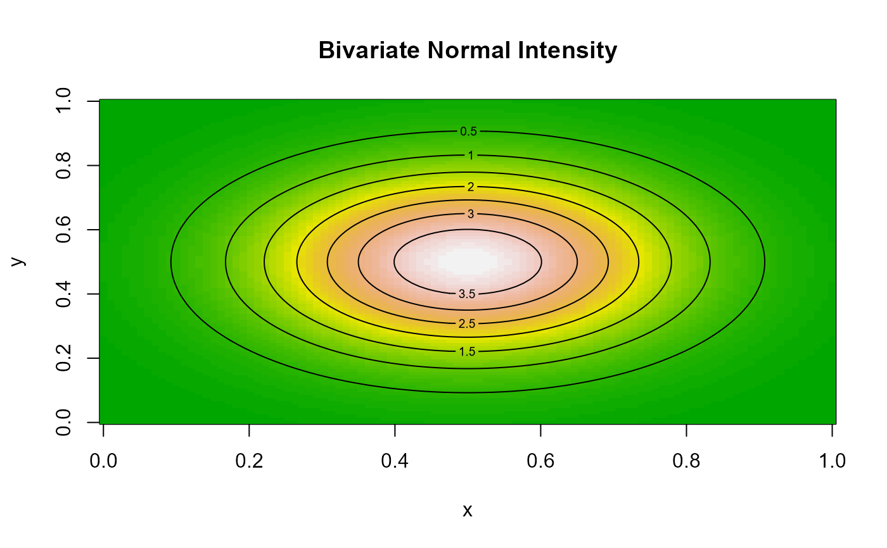

Evaluates the density of a bivariate normal distribution with mean vector \(\mu = (\mu_x,\mu_y)\) and diagonal covariance matrix (independent components). The density is the product of the two univariate normal densities: $$f(x,y) = \phi(x;\mu_x,\sigma_x)\,\phi(y;\mu_y,\sigma_y).$$
Numeric vector of densities (or log-densities) with length determined by standard
recycling rules for x and y.
# Evaluate the density at the peak
norm2d(0.5, 0.5, mu = c(0.5, 0.5), sd = c(0.2, 0.2))
#> [1] 3.978874
# Evaluate at multiple x values
norm2d(c(0.3, 0.7), 0.5, mu = c(0.5, 0.5), sd = c(0.2, 0.2))
#> [1] 2.413309 2.413309
# Visualize on a grid
x <- y <- seq(0, 1, length.out = 100)
f <- Vectorize(function(x, y) norm2d(x, y, mu = c(0.5, 0.5), sd = c(0.2, 0.2)))
z <- outer(x, y, f)
image(x, y, z, col = terrain.colors(50), main = "Bivariate Normal Intensity")
contour(x, y, z, add = TRUE)
